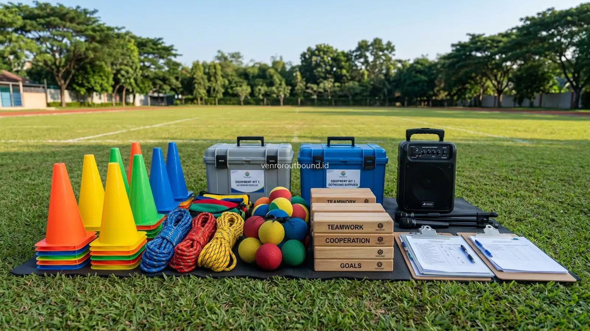

Apa Itu Paket Outbound MPLS?
Paket outbound MPLS merupakan rancangan kegiatan terpadu yang memfasilitasi adaptasi siswa baru melalui rangkaian ice breaking, team building, dan simulasi pembentukan karakter di luar ruang kelas. Paket kegiatan ini umumnya dapat disesuaikan mencakup fasilitator berpengalaman, peralatan simulasi interaktif, tata kelola keamanan lapangan, hingga penyusunan rundown dinamis yang mendukung pencapaian tujuan orientasi sekolah secara aman dan terstruktur.
Menjelang pembukaan tahun pelajaran baru, panitia Masa Pengenalan Lingkungan Sekolah (MPLS) yang terdiri dari jajaran dewan guru kesiswaan, pembina OSIS, dan komite sekolah kerap dihadapkan pada keterbatasan waktu dan sumber daya dalam menyusun agenda kegiatan. Menghadirkan suasana penerimaan siswa baru yang edukatif, tertib, sekaligus meriah membutuhkan persiapan logistik dan metodologi yang tidak sedikit.
Di sinilah konsep penyediaan program terstruktur menjadi solusi praktis. Paket outbound orientasi siswa hadir bukan sebagai kegiatan wisata rekreasi biasa, melainkan sebagai format intervensi edukasi terencana. Dengan skema yang tepat, panitia dapat mendelegasikan teknis pengelolaan dinamika lapangan kepada tim fasilitator profesional, sementara bapak/ibu guru dapat lebih fokus mengamati perilaku kepribadian para siswa baru sebagai bahan pemetaan bimbingan konseling di awal tahun ajaran.
Tujuan Kegiatan Outbound MPLS bagi Siswa Baru
Setiap butir simulasi yang dimasukkan ke dalam paket orientasi sekolah harus berpijak pada sasaran perkembangan psikososial siswa. Secara garis besar, kegiatan ini diarahkan untuk mencapai sejumlah target berikut:
- Akselerasi Adaptasi Sosial: Membantu siswa melampaui fase canggung dan rasa terisolasi, sehingga lebih cepat menemukan rasa nyaman dan persahabatan di kelas barunya.
- Penanaman Nilai-Nilai Positif: Menginternalisasikan karakter integritas, kejujuran, rasa saling menghormati (anti-bullying), dan kedisiplinan melalui metafora permainan yang konkret.
- Pengembangan Soft Skills Esensial: Melatih kemampuan mendengar secara aktif, menyampaikan pendapat tanpa rasa takut, serta berbagi peran secara adil dalam kelompok.
- Pencegahan Praktik Kekerasan: Menggantikan tradisi orientasi masa lalu yang kaku dan intimidatif dengan aktivitas edukatif yang memberdayakan serta menghargai martabat seluruh siswa.
Apa Saja Komponen Paket Outbound MPLS yang Perlu Disiapkan?
Sebagai panduan informasi komprehensif bagi calon panitia sekolah dalam menyeleksi atau menyusun kebutuhan proposal, berikut adalah checklist komponen esensial yang perlu diperhatikan:
| Komponen Kegiatan | Perlu Dipersiapkan | Catatan & Detail Konfirmasi |
|---|---|---|
| Tujuan & Nilai Inti | Ya | Tentukan outcome spesifik (kebersamaan, disiplin, wawasan lingkungan). |
| Jumlah Data Siswa | Ya | Dasar pembagian jumlah kelompok kecil dan penentuan pos permainan. |
| Kelayakan Lokasi | Ya | Sesuaikan dengan lapangan sekolah sendiri atau destinasi outbound luar sekolah. |
| Durasi & Jam Acara | Ya | Tentukan rundown half-day (pagi-siang) atau full-day sesuai agenda kesiswaan. |
| Tim Fasilitator Lapangan | Sesuai Program | Konfirmasi rasio fasilitator terhadap kelompok dalam proposal tertulis. |
| Peralatan Media Games | Sesuai Program | Konfirmasi jenis media (tali, bola spons, pipa labirin, papan puzzle). |
| Sound System Portable | Sesuai Kebutuhan | Konfirmasi apakah disediakan mandiri oleh sekolah atau difasilitasi vendor. |
| Spanduk / Backdrop Acara | Opsional / Sesuai Paket | Konfirmasi pencetakan nama sekolah, tahun ajaran, dan tema kegiatan. |
| Standar P3K & Paramedis | Perlu Dipertimbangkan | Siapkan tenda istirahat, tandu evakuasi ringan, dan obat standar sekolah. |
| Mitigasi Rencana Cuaca | Ya | Siapkan alternatif perpindahan stasiun ke selasar atau aula indoor jika hujan. |
Informasi mengenai modul dan spesifikasi layanan ini dapat ditelaah lebih lanjut pada menu Paket Outbound Sekolah untuk mendapatkan gambaran skema yang umum diaplikasikan pada jenjang SMP, SMA, maupun SMK.
Modul Ice Breaking dan Pencair Suasana
Sesi pembuka bertindak sebagai katalisator energi. Di bawah panduan master game berpengalaman, seluruh siswa baru dikumpulkan dalam formasi lingkaran besar (large circle) untuk mengikuti gerakan ritmik, tepuk konsentrasi, dan permainan respon cepat yang memancing keceriaan spontan. Suasana hangat yang tercipta pada 45 menit pertama ini menjadi kunci utama keberhasilan seluruh rangkaian acara selanjutnya.
Modul Character Building dan Disiplin Positif
Setelah suasana cair, peserta mulai diperkenalkan pada simulasi pembentukan karakter. Modul ini mengajarkan ketepatan waktu, kerapian barisan, dan kepatuhan terhadap komitmen aturan yang telah disepakati bersama. Pendekatan disiplin yang dibangun bersifat positif melalui kesadaran diri dan konsekuensi logis kelompok, bukan melalui bentakan keras atau hukuman fisik.
Baca Juga:
Rangkaian Teamwork Games dan Komunikasi Efektif
Pada sesi ini, kelompok-kelompok kecil akan mengunjungi serangkaian pos tantangan (challenge stations). Setiap pos menyajikan simulasi yang mengharuskan setiap anggota berkontribusi:

- Permainan Estafet Pipa (Pipe Line): Peserta harus mengalirkan bola kecil melewati potongan pipa setengah lingkaran secara berantai tanpa bola terjatuh. Mengajarkan koordinasi gerak, kesabaran, dan kesinambungan kerja tim.
- Teka-Teki Karpet Terbang (Magic Carpet): Seluruh anggota regu berdiri di atas selembar terpal kecil dan bertugas membalik terpal tersebut tanpa ada satupun kaki yang menyentuh tanah di luar terpal. Melatih pemecahan masalah spasial dan kompromi antarpeserta.
- Instruksi Buta Bersuara (Blind Lead): Salah satu anggota memandu rekan yang ditutup matanya untuk melewati rintangan hanya melalui arahan suara yang jelas dan tenang. Membangun rasa percaya (trust building) dan komunikasi yang presisi.
Simulasi Problem Solving dan Kepemimpinan Pelajar
Tingkatan tantangan berikutnya menguji daya tahan mental kelompok ketika menghadapi kebuntuan rencana. Fasilitator menyajikan skenario dengan batas waktu ketat dan sumber daya terbatas. Di sinilah bibit kepemimpinan alami siswa baru akan terlihat, mulai dari siapa yang mampu menenangkan kepanikan, siapa yang teliti mengatur pembagian tugas, hingga siapa yang setia memberikan motivasi moral.
Peran Fasilitator dan Standar Manajemen Keselamatan
Fasilitator bukan sekadar pemandu permainan, melainkan pendidik luar ruang yang bertugas menjaga keselamatan fisik (physical safety) dan kenyamanan emosional (psychological safety) setiap anak. Fasilitator terlatih selalu mengamati tanda-tanda kelelahan fisik, memantau kecukupan air minum peserta, serta segera memitigasi potensi gesekan antarpeserta agar tidak berkembang menjadi perselisihan.
Contoh Rundown Outbound MPLS Satu Hari
Berikut adalah draf susunan jadwal umum setengah hari (half-day program) yang dapat disesuaikan dengan agenda sekolah:
- 07.00 – 07.30: Presensi siswa baru, pemeriksaan kesiapan fisik, dan pembagian regu awal oleh panitia kesiswaan.
- 07.30 – 08.15: Sesi Pembuka: Energizer, Ice Breaking massal, dan penetapan komitmen nilai kegiatan.
- 08.15 – 08.45: Dinamika Regu: Pembuatan nama kelompok, yel-yel penyemangat, dan pemilihan ketua regu.
- 08.45 – 10.30: Rotasi Pos Simulasi: Pelaksanaan Teamwork Games dan Problem Solving di 4 stasiun berbeda.
- 10.30 – 11.00: Istirahat, hidrasi air mineral, dan snack pagi bersama.
- 11.00 – 11.45: Final Project Challenge (Permainan Kolaborasi Seluruh Angkatan) dan Sesi Refleksi Makna (Debriefing).
- 11.45 – 12.00: Evaluasi singkat, penyampaian apresiasi, doa bersama, dan penutupan acara.
Bagaimana Menyesuaikan Program dengan Jumlah Siswa?
Jumlah peserta orientasi sekolah dapat bervariasi secara signifikan, mulai dari 80 siswa pada sekolah swasta hingga 500 siswa pada sekolah negeri berskala besar. Penyesuaian program dilakukan melalui pembagian zona pos rotasi. Untuk angkatan besar, lapangan dibagi menjadi beberapa sektor aktivitas mandiri agar tidak terjadi antrean panjang yang membuat siswa menunggu lama dalam keadaan pasif.
Checklist Sebelum Memilih Vendor Outbound Sekolah
Panitia sekolah dan komite disarankan memverifikasi beberapa hal krusial sebelum memutuskan bekerja sama dengan pihak luar:
- Pastikan penyedia jasa memiliki modul khusus yang berorientasi pada usia pelajar dan paham betul larangan perpeloncoan.
- Minta rincian proposal tertulis yang memuat alur rundown detail, sasaran nilai setiap games, dan daftar fasilitas yang disediakan.
- Tanyakan rasio fasilitator terhadap jumlah siswa untuk memastikan pengawasan lapangan berjalan optimal.
- Diskusikan secara terbuka rencana mitigasi cuaca dan standar pertolongan pertama (P3K) di lokasi kegiatan.
Cara Meminta Proposal Outbound MPLS
Untuk mengajukan permintaan rancangan program dan estimasi proposal, pihak sekolah cukup menyiapkan data awal mencakup perkiraan jumlah siswa baru, pilihan tanggal rencana pelaksanaan, preferensi lokasi (di sekolah sendiri atau lokasi alam terbuka), serta penekanan tema khusus yang diinginkan oleh pihak kepala sekolah.
Siapkan Konsep MPLS Sekolah Anda
Jika sekolah membutuhkan konsep kegiatan outbound MPLS yang disesuaikan dengan jumlah siswa, tujuan kegiatan, durasi, lokasi, dan karakter peserta, Anda dapat mendiskusikan kebutuhan tersebut bersama admin VENDOR OUTBOUND.
WhatsApp: +62 82211221909Kesimpulan
Menyelenggarakan Masa Pengenalan Lingkungan Sekolah yang bermakna merupakan investasi moral penting bagi masa depan para pelajar. Paket outbound MPLS yang terencana dengan baik memberikan kerangka kerja yang terstruktur bagi panitia sekolah dalam memfasilitasi masa transisi siswa baru secara aman, menyenangkan, dan kaya akan nilai-nilai pembentukan karakter.
Dengan perencanaan matang, komunikasi terbuka antara sekolah dan fasilitator pendamping, serta pemilihan modul aktivitas yang inklusif, hari-hari pertama siswa baru di sekolah akan menjadi titik tolak yang membangkitkan rasa bangga dan semangat belajar sepanjang masa studi mereka.
Pertanyaan Sering Diajukan (FAQ)

Arby Ardiansyah
Arby Ardiansyah merupakan penulis konten yang membahas outbound, experiential learning, team building, family gathering, dan kegiatan pengembangan karakter untuk kebutuhan sekolah, keluarga, maupun perusahaan.